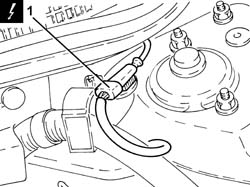
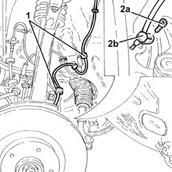

3340A30 RPM SENSOR (ONE) OF ONE L/H OR R/H FRONT WHEEL - R+R
- Path
- Procedures > 33 BRAKING SYSTEM > 3340 ANTI-LOCK BRAKE SYSTEM (ABS) > 3340A ABS CHECK/ADJUSTMENT DEVICES > 3340A30 RPM SENSOR (ONE) OF ONE L/H OR R/H FRONT WHEEL - R+R
- Kind
- repair procedure (removal / refitting; the operation number is the code)
- Applies to
- all engines; all production periods
- Interactive page
- https://sloeber94.github.io/elrnDB-aGt/en/#/125001366
Applies to: all engines; all production periods
 Removing
Removing
 Refitting
RefittingPosition the vehicle on a lift.
Make sure that the ignition key is in the OFF position, then disconnect the battery terminal (-).
Description | Connector | |
|---|---|---|
- | Battery | See A1B BATTERY ( BATTERY NEGATIVE ) |
- FOR LEFT FRONT RPM SENSOR
- Op. 4450B02 LEFT FRONT WHEEL R R
- Op. 7055B65 ENGINGE BAY DUSTGUARD PROTECTION IN LEFT FRONT WHEEL ARCH R R
- Op. 7055B90 LEFT FRONT WHEEL ARCH LINER - R.R.
- FOR RIGHT FRONT RPM SENSOR
- Op. 4450B04 RIGHT FRONT WHEEL R R
- Op. 7055B66 ENGINE COMPARTMENT DUST SHIELD PROTECTION IN RIGHT FRONT WHEEL ARCH - R.R.
- Op. 7055B91 RIGHT FRONT WHEEL ARCH LINER - R.R.
1. Disconnect the electrical connection for the front wheel rpm sensor.
Description | Connector | |
|---|---|---|
1 | Left front wheel sensor for ABS | See K70 LEFT FRONT WHEEL SENSOR FOR ABS ( FRONT ) |
Description | Connector | |
|---|---|---|
1 | Right front wheel sensor for ABS | See K71 RIGHT. FRONT WHEEL SENSOR FOR ABS |

Applies to: all engines; all production periods
1. Release the electrical wiring for the front wheel rpm sensor from the fastenings in the wheel arch.
2. Undo the bolt (2a) and remove the front wheel rpm sensor (2b) complete with electrical wiring.

Applies to: all engines; all production periods
Refitting
RemovingPlace the front wheel rpm sensor back in its housing complete with electrical wiring and secure it tightening the bolt to the recommended torque.
Fastening | Component | Ø | Value (daNm) | |
|---|---|---|---|---|
- | Bolt | FRONT WHEEL RPM SENSOR (ABS) | M6 | 0.7 ÷ 0.9 |
Secure the electrical wiring for the front wheel rpm sensor to the fastenings in the wheel arch.
Place the electrical wiring for the front wheel rpm sensor back in its housing in the engine compartment and connect the electrical connection.
- FOR RIGHT FRONT RPM SENSOR
- Op. 7055B91 RIGHT FRONT WHEEL ARCH LINER - R.R.
- Op. 7055B66 ENGINE COMPARTMENT DUST SHIELD PROTECTION IN RIGHT FRONT WHEEL ARCH - R.R.
- Op. 4450B04 RIGHT FRONT WHEEL R R
- FOR LEFT FRONT RPM SENSOR
- Op. 7055B90 LEFT FRONT WHEEL ARCH LINER - R.R.
- Op. 7055B65 ENGINGE BAY DUSTGUARD PROTECTION IN LEFT FRONT WHEEL ARCH R R
- Op. 4450B02 LEFT FRONT WHEEL R R
Connect the negative battery terminal (-).
Remove the vehicle from the lift.
Topics linked from this page (6)
- 4450B02 LEFT FRONT WHEEL R R
- 4450B04 RIGHT FRONT WHEEL R R
- 7055B65 ENGINGE BAY DUSTGUARD PROTECTION IN LEFT FRONT WHEEL ARCH R R
- 7055B66 ENGINE COMPARTMENT DUST SHIELD PROTECTION IN RIGHT FRONT WHEEL ARCH - R.R.
- 7055B90 LEFT FRONT WHEEL ARCH LINER - R.R.
- 7055B91 RIGHT FRONT WHEEL ARCH LINER - R.R.